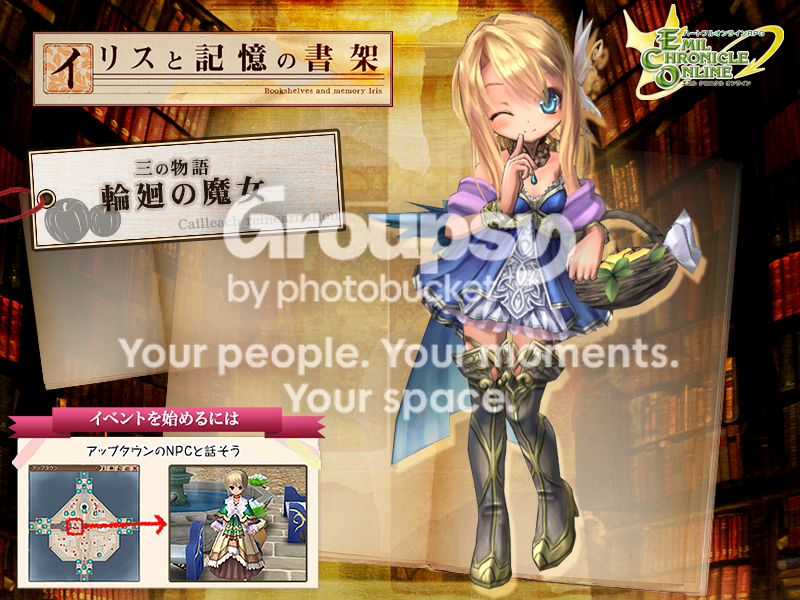
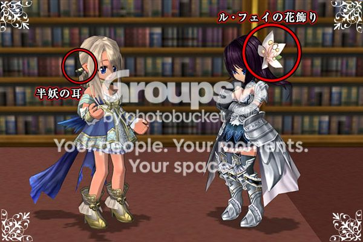

Re: [ECO Jp Event] Bookshelves and memory Iris [โหลดโหด]
แวะเข้ามาอ่าน
http://eco.froztic.in.th/archive/ecofanclub/
http://eco.froztic.in.th/archive/ecofanclub/viewtopic.php?f=24&t=83300


 )
)NekoChocola เขียน:ให้มั่วให้อีกมิ (มีท่องเที่ยวด้วยแหละ คนที่ทำมิโดริอยู่น่าจะปลื้มนะ วาร์ปไปวาร์ปมาสนุกสนาน
ตอนนี้เปิดชาวนาทำอยู่


 )
) (เดือนนี้มีแต่ตัวละครอิ่ม ๆ กันทั้งนั้น)
(เดือนนี้มีแต่ตัวละครอิ่ม ๆ กันทั้งนั้น)



